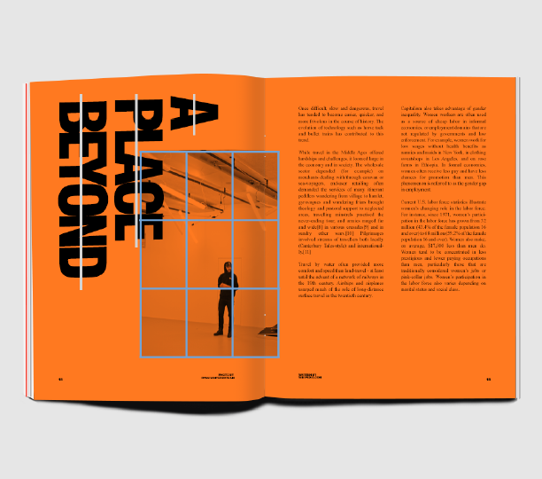

Principles of Type and Photography
Typography is an art that takes the written word and turns it into a visual experience. With endless font options and styles, we as designers can give a design a feeling or influence the readability just by the choice of font. Font conveys the emotions and feelings that the words say, so that even before you've read the words, the type has conveyed a feeling already.
Photography is the art of capturing a moment and the emotion of a single frame frozen in time. Each photo is unique, and even photos--like any other art form--can be composed. There are many principles to photography that we often don't think about when snapping a quick photo.
Gabriele Wechner: April 4, 2017
This is a magazine mockup from German graphic designer Gabriele Wechner. In this she makes good use of contrasting typefaces and photographic principles.
Type
Contrasting typefaces in design
The two featured fonts in this design contrast from each other in many ways. The bold title font is a sharp sans serif font with elongated apertures, and very little stroke width variation. This contrasts with the body font that has serifs, highly varied stroke widths, and wide, circular apertures.
The type also contrasts visually through the orientation and proxmity of the text blocks, as well as the size and weight of the fonts.
Photo
The rule of thirds in photography
The photo displays a pricinple called the rule of thirds where the subject of the picture is in the left or eight third of the composition.
In this photo, we can see the subject is in the lower right hand thrid of the photo. This creates a intentional focal point on the subject in the third, and generally leads to a more compelling and visually interesting photo.
Recreation
Recreation of the rule of thirds
In these three photographs, I wanted to recreate the subject of a person in the lower right third, so you could replace the image in the spread with any of the recreations and have the same focal.
I didn't take these with the rule of thrids in mind, but cropping them to put the subject in the third really elevated the composition of the photos without that much work!
Conclusion
Typography is something more than just words on a page. The style of the font indicates the personality--bold, brash, cutesy, fun, serious, silly--and can convey to you the tone of the type before you even read the words the font is attached to.
Photography is more than just picking up a camera and taking a picture. Composition can take a photo from a nice picture you took on a walk to a composition that evoked emotion. The rule of thirds that we observed in this article is just one way that we can add intrigue to a photo. We can also focus on things that have good leading line, depth of field, or so much more.
You can read more from Gabriele Wechner here